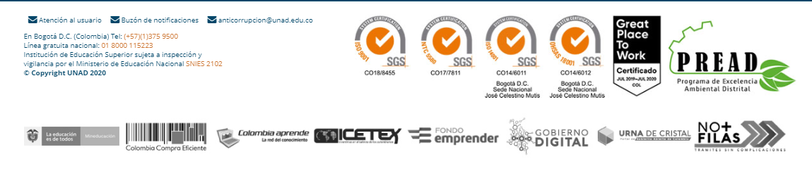
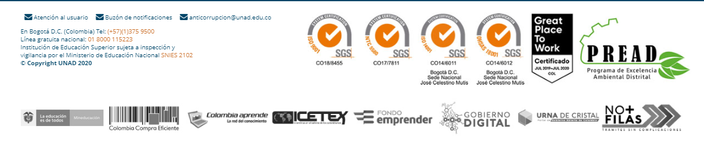

Mi Perfil
Nombre:
Marco Polo Caicedo
Profeccion:
Tecnico profecional en sistemas y Tecnologo en analisi y desarrollo de sistemas
Correo Institucional:
mpoloca@unadvirtual.edu.co
Correo personal:
mapoca12@hotmail.es
Telefono de Contacto:
318-7199145
Marco Polo Caicedo
Tecnico profecional en sistemas y Tecnologo en analisi y desarrollo de sistemas
mpoloca@unadvirtual.edu.co
mapoca12@hotmail.es
318-7199145
 
